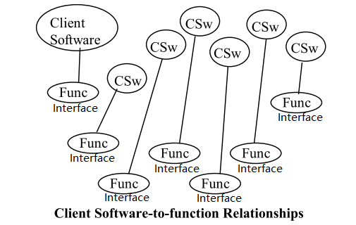
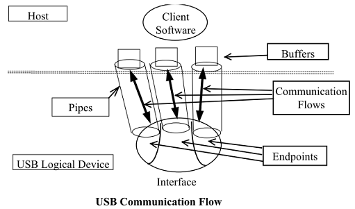

USB 简介
USB 发展历史
USB 到现在一共经历了以下版本：
| Version | App | Speed | Direction | Data Line |
|---|---|---|---|---|
| USB 1.0 | 低速 Low Speed | 1.5Mbps | Half 半双工模式 | 1 对差分线 D+/D1 |
| USB 1.1 | 全速 Full Speed | 12Mbps | Half 半双工模式 | 1 对差分线 D+/D1 |
| USB 2.0 | 高速 Hi-Speed | 480Mbps | Half 半双工模式 | 1 对差分线 D+/D1 |
| USB 3.1 Gen1 | 超高速 SuperSpeed | 5Gbps | Full 双工模式 | 2 对差分线 |
| USB 3.1 Gen2 | 超高速 SuperSpeed+ | 10Gbps | Full 双工模式 | 2 对差分线 |
| USB 3.2 | 超高速 SuperSpeed+ | 20Gbps | Full 双工模式 | 4 对差分线 |
| USB 4.0 | 超高速 SuperSpeed+ | 40Gbps | Full 双工模式 | 4 对差分线 |
USB 1.0/2.0
在 USB 1.0/2.0 时期只需要用到 4 根线：1 根电源线、1 根地线、1 对差分数据线。因为只有 1 条数据通路，所以只能是半双工的，同一时间只能是接收或者发送数据。
使用 Type A 和 Type B 型的接口：
还有一系列小尺寸的变种：
USB 3.0
在 USB 3.0 时代从两个方向来增加速度：
-
增加传输的时钟速率。速率从 480M 增加到了 5G，高速信号会给 PCB 走线、EMC、线缆带来不小的压力。
-
增加差分数据通路的数量。首先发明了改进型的 USB3.0
Type A接口，在原有 4 线的基础上再增加了 5 条线：
可以看到增加的 5 条线分别为 1 条地线和 2 对差分数据线。因为有了 2 条数据通路，所以可以双工，同一时间能同时接收和发送数据。在工作在 USB 3.0 模式时，原来的 D+/D- 差分线是不使用的。
上图是 USB3.0 Type A 接口示意图，注意新增的 5 条线已断针的形式隐藏在后面，这样的设计是为了和 USB 2.0
兼容。但是颜色改成了蓝色，以示区别。
在 USB 3.0 还出现了一种全新的接口类型 Type C 接口，它带来了以下好处：
-
接口线数量猛增到了 24 线，其中数据通路在
D+/D-之外再提供了 4 条差分数据线。 -
实现了正反面任意插拔，大大方便了用户使用。
小技巧
从 USB 3.2 开始，因为它需要使用 4 对数据差分线，所以目前唯一支持的只有 Type C 接口。
速度识别
首先通过 D+/D- 的上拉电阻来区分 USB 1.0 和 1.1 ：
-
D+上拉，USB 1.1Full-speed。 -
D-上拉，USB 1.0Low-speed。
然后通过编码识别来进一步区分 High-speed 和 Full-speed。USB 2.0
High-speed 的 D+ 上拉，首先被当成 USB 1.1
Full-speed ：
-
Hub 检测到有设备插入上电，向主机通报，主机发送 Set_Port_Feature 请求让 Hub 复位新插入的设备。设备复位操作是 Hub 通过驱动数据线到复位状态
SE0（即 D+ 和 D- 全为低电平），并持续至少 10ms。 -
高速设备看到复位信号，通过内部的电流源向 D- 线持续灌大小为 17.78mA 电流。因为此时高速设备的 1.5k 上拉电阻未撤销，在 Hub 端，全速/低速驱动器形成一个阻抗为 45Ohm 的终端电阻，
1.5k 与 45Ohm 的电阻并联，仍然是 45Ohm，所以在 Hub 端看到一个约 800mV 的电压，这就是Chirp K信号。Chirp K信号持续 1ms ~ 7ms。 -
在 Hub 端，虽然设置了复位信号，并一直驱动着
SE0，但 USB2.0 的高速接收器一直在检测Chirp K信号，如果没有Chirp K信号看到，就继续复位操作，直到复位结束，然后识别为全速设备。 -
设备发送的
Chirp K信号结束后 100us 内，Hub 必须开始恢复一连串的KJKJKJ…序列，向设备表明这是一个 USB2.0 的 Hub。这里的 KJ 序列是连续的，中间不能间断，而且每个 K 或 J 的持续时间在 40us~60us。KJ 序列停止后的的 100-500us 内结束复位操作。Hub 发送Chirp KJ序列的方式和设备一样，通过电流源向差分数据线交替灌 17.78mA 的电流实现。 -
- 再回到设备端来。设备检测到 6 个 Hub 发送的
Chirp信号后（3 对 KJ 序列），它必须在 500us 内切换到高速模式。切换动作有： -
-
断开 1.5K 的上拉电阻。
-
连接 D+/D-上 的高速终端电阻，实际上就是全速/低速差分驱动器。
-
进入默认的高速状态。执行上两步后，USB 信号线上看到的现象就发生变化，Hub 发送出来的
Chirp KJ序列幅值降到原来的一半，即 400mV。这是因为设备端挂载新的中断电阻，并联后的阻抗是 22.5Ohm。之后高速操作的信号幅度就是 400mV，而不像全速/低速那样的 3V。
-
- 再回到设备端来。设备检测到 6 个 Hub 发送的
USB Chirp K 、 Chirp J 、 SE0
信号定义：
| 信号 | 低速模式 Low-speed | 全速速模式 Full-speed | 高速模式 High-speed |
|---|---|---|---|
| Chirp J | D+ = 0，D- = 1 | D+ = 0，D- = 1 | D+ = 1，D- =0 |
| Chirp K | D+ =1， D- = 0 | D+ =1， D- = 0 | D+ =0， D- = 1 |
| SE0 | D+ = 0， D- =0 | D+ = 0， D- =0 | D+ = 0， D- =0 |
| IDLE | K 状态 | J 状态 | SE0 状态 |
-
从 J 到 K 或者从 K 到 J，信号翻转，说明发送的信号是 0。从 J 到 J 或从 K 到 K，信号不变，说明发送的信号是 1。
-
Chirp J K 状态高速设备与低速设备相反。
对于 USB 3.0 以后的速度识别，暂未涉及。
OTG
USB OTG 技术可实现没有主机时设备与设备之间的数据传输。例如：数码相机可以直接与打印机连接并打印照片，手机与手机之间可以直接传送数据等，从而拓展了 USB 技术的应用范围。
在 OTG 中，初始主机设备称为 A 设备 ，外设称为 B 设备
。也就是说，手机既可以做外设，又可以做主机来传送数据，可用电缆的连接方式来决定初始角色 (由 ID 线的状态来决定)。
在 Mini/Micro USB 接口一共有 5 根线，在原有 USB 的基础上多出了一根 ID 线。OTG 的识别是通过 ID
脚的电平进行决定 OTG 作为 Device 还是 Host：
当 OTG 设备检测到接地的 ID 引脚时，表示默认的是 A 设备（主机），而检测到 ID 引脚浮空的设备则认为是 B 设备（外设）。
phy 总线
USB 信号传输前，需要通过 phy 把 usb 控制器的数字信号转成线缆上的模拟信号。usb 控制器和 phy 之间的总线主要有 3 种：
-
UTMI(USB2.0 Transceiver Macrocell Interface)。最早的 USB controller 和 USB PHY 通信的协议。
-
ULPI(UTMI+Low Pin Interface)。从名字上就可以看出 ULPI 是 UTMI 的 Low Pin 版本
-
HSIC(USB 2.0 High Speed Inter Chip)。是 USB 2.0 的芯片到芯片变体，它消除了普通 USB 中的传统模拟收发器。速度可达 480M，是 IIC 的理想替代。
传输编码方式
USB 信号在线路上传输时，需要采取合适的编码方式。
-
USB 1.0/2.0 采用的是 URZI (No Return Zero-Inverse) 编码。无需同步的时钟信号也能产生同步的数据存取。NRZI 的编码规则是，当数据位为 1 时不转换，当数据位为 0 时转换，如下图所示。位传输的顺序以 LSB 优先。

这种编码方式会遇到一个严重的问题，若重复相同的 1 信号时，就会造成数据长时间无法转换，逐渐的累积而导致堵塞的情况，使得读取的时序出现严重的错误。因此，在 NRZI 编码之间，还需执行所谓的位填塞（bit-stuffing）。即是，若原始的串行数据含有连续的 6 个 1 时，就执行位填塞工作，填塞一个 0。
-
USB 3.0 采用的是 8b/10b 编码。
-
USB 3.1/3.2 采用的是 128/132 (64b/66b) 编码。
总线拓扑
USB 是 星型 拓扑总线，由 Hub 来进行多级扩展。最大的层级不能超过 7 层，在任何一条路径上不能超过 5 个非根
Hub。

USB 总线由 3 种角色组成：
-
Host。星型总线的中心，配置所有 Hub 和 Device，调度总线上所有的数据收发。 -
Hub。提供了扩展端口，能连接更多的 Device。Hub 本身也是一种特殊的 Device。 -
Device。提供了实际的设备功能。
经过几种角色的组合以后，USB 总线形成了逻辑上的星型拓扑，Host 到任一 Device 都是点对点传输。
Device 内部的逻辑关系
USB 将 Device 内部的资源进一步细分成了 3 个层级： Configuration 配置、
Interface 接口、 Endpoint 端点。
-
Configuration配置每个 USB 设备都可以包含一个或者多个配置，不同的配置使设备表现出不同的功能组合，配置有多个接口组成。在 USB 协议中，接口由多个端点组成，代表一个基本的功能。
看下面的一个例子。一个 USB 播放器带有音频视频功能，还有旋钮和按钮。那么这个Device设备 可以提供 3 种Configuration配置：配置 1：音须(接口) + 旅钮(接口） 配置 2: 音频(接口) + 视频(接口) + 按钮(接口） 配置 3：视频(接口) + 旋钮(接口）
-
Interface接口 /Function功能Interface 接口代表一个独立的基本的功能，所以有时也称之为
Function功能。如果我们开发USB Client驱动，我们面向的对象就是USB Interface，上述实例中的音烦接口、视频接口、投钮接口、旋钮接口均需要一个独立的USB Client驱动程序。
一个
Interface接口中包含了完成这个基本功能的所需要的一个或者多个Endpoint端点。 -
Endpoint端点 (Pipe管道)端点是 USB 设备中最基本的可寻址单位，它是位于 USB 设备或主机上的一个数据缓冲区，用来存放和发送 USB 的各种数据。
设备的
Endpoint 0是一个特殊端点，在设备初始化时系统需要使用该端点读配置设备。其他编号的端点USB Client驱动都可以使用。一个
Host主机和一个设备Device的端点建立的连接称之为Pipe管道：
Compound / Composite Device
在 USB 协议描述中，有两个非常相近的名字： Compund Device 和 Composite
Device 。正确的理解的它们有助于我们理解清楚随后的一些概念。
-
Compund Device。指的是一个Hub设备中，还包含了其他的功能Device。 -
Composite Device。指的是一个Device当中，包含了多个Interface，能提供多个独立的功能。
Hub
在 USB 的总线结构中，Hub 是一个重要的组成成员，它主要的作用是控制 Port 端口来连接更多的 USB Device 设备。
它的核心点如下：
-
USB Host 需要给总线上的设备分配不同的地址才不会冲突，USB 的星形拓扑连接设备都是通过 Hub 的端口连结到总线上的。
-
总线初始化枚举设备时，USB 设备的地址都是默认地址 0，但是 Hub 的端口都是关闭的所以并不产生设备冲突，Host 逐个打开 Hub 的端口，逐个利用打开端口上设备的默认地址 0 来配置设备，给其分配新的地址，从 Endpoint 0 中读出设备的配置并设置。在运行过程中 USB 设备的热插拔也是和这类似的。
Configure Descriptor
对于一个 USB 设备，在 Device 、 Configuration、
Interface、 Endpoint 每个层次上都有对应的描述信息。可以使用
Endpoint0 在设备初始化的时候读出和配置这些信息。
最重要的是设备在初始化时，通过这些信息来进行枚举配置的过程。一个设备枚举的过程分为如下 8 步：
-
获取设备描述符
-
Host/Hub 通过数据线上拉电阻的阻值变化检测到新设备接入。Host 等待 100ms 以保证设备电源稳定。
-
Host 向 Device 发 Bus Reset 使得设备进入 default 状态，从此之后，设备可以响应默认地址 0 。
-
Host 请求 Device 发送 Device Descriptor 的前 64 个字节。
-
-
复位
-
Host 在收到 Device Descritptor 的前 8 个字节后，再次向 Device 发出 Bus Reset。
-
-
设置地址
-
Host 发送一个 Set Address 命令给 Deivce，从此 Device 有个通信地址，不再使用默认地址 0 进行通信。
-
-
再次获取设备描述符
-
Host 请求获取完整的 Device Descritpor, 总计 18 字节。
-
-
获取配置描述符
-
Host 请求获取 9 个字节的 Configuration Descriptor 以了解 Configuration escriptor 的总大小。
-
Host 请求 255 字节的 Configuration Descritpor。
-
-
获取接口，端点描述符
-
获取字符串描述符
-
选择设备配置
总线调度
USB 作为一个高速总线，它需要充分利用起其带宽，并且能承担其多种业务类型的数据包的传输。
对数据传输来说，最重要的有几种因素 带宽 、 时间延迟 、
完整性校验 。根据这几种因素的组合，USB 把数据传输分成了 4 类：
| Type | KeyPoint | Sample | Descript |
|---|---|---|---|
|
Control Transfers 控制传输 | 完整性校验 |
USB 配置命令 |
突发的、非周期性的，主机软件发起的请求/响应通信 通常用于命令/状态操作。 数据量小对带宽、时间延迟要求不高，但是要求数据 须正确。 |
|
Isochronous Transfers 等时传输 |
带宽 、 时间延迟 | 摄像头 |
等时传输:主机和设备之间定期、连续的通信，通常用 于时间相关信息。这种传输类型还保留了数据中封装 的时间概念。然而，这并不意味着这些数据的交付需求 总是时间紧迫的。 数据量大需要大带宽、对时间延迟也很高，但是不要求 数据必须正确。也正因为前两者的要求高，也很难做到 数据校验和重传。 |
|
Interrupt Transfers 中断传输 |
时间延迟 、 完整性校验 |
键盘、 鼠标 |
低频、有边界延迟通信。对时间延迟要求高，但数据量 所以要求数据必须正确。 |
|
Bulk Transfers 批量传输 |
带宽 、 时间延迟 、 完整性校验 | 文件存储 |
非周期性、大包突发通信，通常用于可以使用任何可用 带宽的数据，也可以延迟到带宽可用。 数据量大需要大带宽，但对时间延迟也不高，要求数据 必须正确。 也正因为对延迟要求不高，所以可以做数据校验和重传。 |
USB 使用以下方法来满足多种类型的数据在一条共享通道上传输：
-
时间延迟。从时间维度上把数据传输切成多个时间片，在每个时间片内绝大部分份额 (最多 80%) 优先传输对时间延迟有要求的数据，如Interrupt Transfers、Isochronous Transfers。在时间片剩下的额度内传输对时间延迟没要求的数据，如Control Transfers、Bulk Transfers。 -
完整性校验。对需要保证数据完整性的数据加上了 CRC 校验，接收端使用 ACK 来知会发送端正确接收，如果没有收到 ACK 发端会尝试重发 3 次。
Frames / Microframes

如上图，USB 从时间维度上把数据传输切成多个时间片：
-
Frames。Low-speed 和 Full-speed 的时间切片大小为1ms，USB 控制器每1ms重新调度一下传输。 -
Microframes。High-speed 的时间切片大小为125us，USB 控制器每125us重新调度一下传输。
这个时间切片，和操作系统上 Schedule Tick 的概念是一样的。
在数据格式传输上又会进一步细分：
-
Transfer。每个时间片的所有传输称之为一个Transfer，或者为一个Frames/Microframes。 -
Transcation。根据某次数据传输的目的，一个Transfer可以分成多个Transcation事务。 -
Packet。数据传输的最小单位，一个Transcation可能由多个Packet组成。
Bulk Transactions
上图可以看到 Bulk 类型的 In/Out Endpint 在数据收发时的状态流程图：
-
NAK。接收端数据未准备好。
-
ACK。接收端接收到数据且数据校验正确。
-
不回应。接收端接收到错误数据，发端会重发 3 次。
Control Transfers
Control 类型 和 Bulk 类型的处理类似。
Interrupt Transactions
Interrupt 类型对 完整性校验 也是有要求，处理流程和前面一样。
Isochronous Transactions
Isochronous 类型是唯一对 完整性校验 没有要求的，所以它的数据不需要 ACK
回应。
USB 和 PCIE 调度的区别
PCIE 总线也是一个非常成功和流行的总线，从底层来说它和 USB 总线是非常像的：
-
它也是高速串行总线。
-
它也是共享性的总线。都是把带宽逻辑切割成多份，分给不同的 Device 和驱动。
但是它又看起来和 USB 如此的不同，主要的差异就在总线的调度上面：
-
PCIE 硬件使用了一个专门的仲裁器来做总线调度，所以在 Device 配置好以后，所有的 Mem/Io 空间被映射到一个统一地址空间当中，只要发起普通的读写操作就能访问。而 USB 的总线调度被暴露了出来，需要硬件软件共同配合才能完成。毫无疑问，PCIE 的硬件复杂度和成本会远远高于 USB。
-
另外由于 PCIE 有独立的仲裁器来进行调度，所以 PCIE 支持多个设备同时操作总线。而 USB 的所有操作都需要 Host 来调度，所以只能由 Host 发起总线操作。从效率来说 USB 要低。
-
还有一点 PCIE 硬件仲裁器对软件是透明的，所以软件读写总线是
同步的。而软件操作 USB 总线是异步的，通过回调的操作来进行 USB 和 CPU 之间的状态对齐。
传输格式
上文说过一个传输时间片 Tranfer/Frame/MicroFrame，可以分割成多个 Transaction 事务，一个 Transaction 事务又可以细分成多个 Packet 包。
Packet
Packet 包是 USB 传输的最小单位，由五部分组成：
-
同步字段（SYNC）
-
包标识符字段（PID）
-
数据字段
-
循环冗余校验字段（CRC）
-
包结尾字段（EOP）

主要的数据包格式有四类，对应不同的 PID 类型：
Token Packet
此格式适用于 IN、OUT、SETUP、PING。
Data Packet
有四种类类型的数据包：DATA0, DATA1, DATA2,and MDATA，且由 PID 来区分。DATA0 和 DATA1 被定义为支持数据切换同步 (data toggle synchronization)。
Handshake Packet
-
ACK: 对于 IN 事务，它将由 Host 发出。对于 OUT、SETUP 和 PING 事务，它将由 Device 发出。
-
NAK: 在数据阶段，对于 IN 事务，它将由 Device 发出。在握手阶段，对于 OUT 和 PING 事务，它也将由 Device 发出，Host 从不发送 NAK 包。
通讯模型
USB 的主要作用就是建立起 Host 和 Device 之间的通讯。
-
简要的通讯模型：
-
详细的通讯模型：